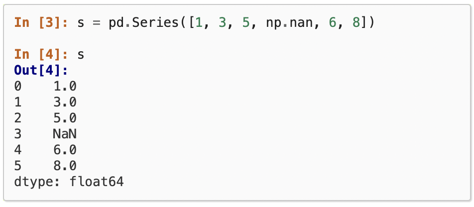
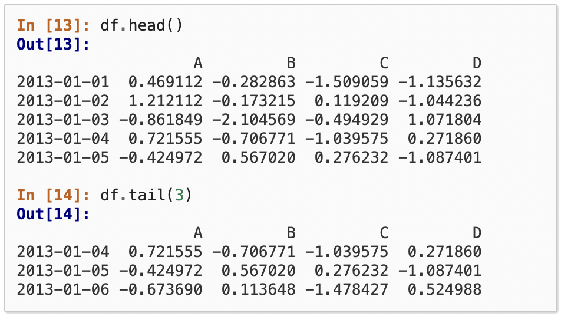
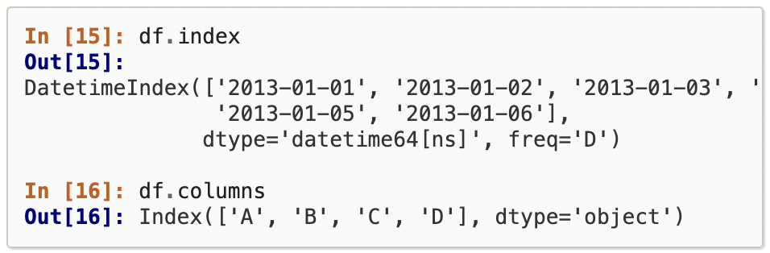

Series is a data structure that is similar to the array in NumPy.
The first difference is that Series allow various types of data to
store in the same series. For example, the image below shows a
Series that contains both float and NaN values. The second
difference is that, though in the image below, we still refer to the
element in Series with series of numbers start from 0, they actually
can be changed to any other data types, such as string. In this way,
we can access element through data["string"].

View the Data stored in a pd.DataFrame
A data frame is consist of multiple Series as columns or rows. Thus,
DataFrame actually can be viewed as a table that can be referenced
by either the first row or the first column. The image below shows
the way to display the first or last several rows. Through,
df.head(), by default, the first 5 rows of the DataFrame is printed.
Through df.tail(3), the last three rows of the DataFrame is
displayed.

Display the Data in DataFrame
The iamge below specifically address how we can reference to the
data stored in a DataFrame. For each DataFrame, there is attribute
called index and columns which correspondeing to the first column
and first row respectively. With these two attribute, we can get
data by columns, such as df['A'], or get datga by rows
df['2013-01-01'], or get the value in specific row and column, such
as df['2013-01-01', 'A'].

The basic description of the data in DataFrame
Describe is a function that can be applied to a DataFrame, and as a
result, it would reutrun basic info that describe each column. For
example, in the below image, through describe, the count, mean, std,
min, 25, 50, 75 precentiles and max values are printed for each
column.